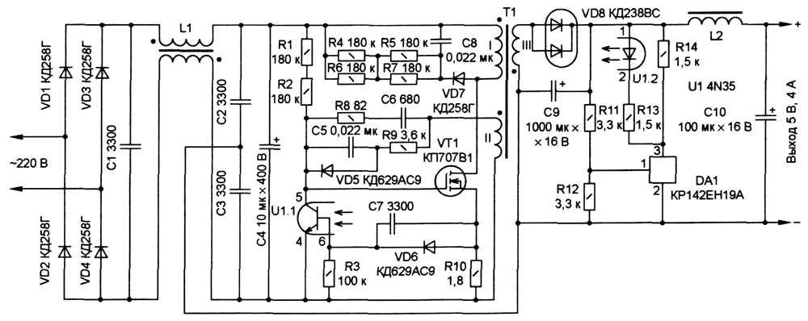

Простой импульсный источник питания
(5 В, 4А)
Источник питания представляет собой однотактный обратноходовый преобразователь напряжения с самовозбуждением. Отличительная особенность предлагаемого устройства — отсутствие специализированных микросхем, простота и дешевизна в изготовлении.
Таблица 1
| Максимальная выходная мощность, Вт | 20 |
| Выходное напряжение, В | 5 |
| Максимальный ток нагрузки, А | 4 |
| Интервал входного напряжения сети, В | 187...242 |
| Частота входного напряжения, Гц | 50 |
| Нестабильность выходного напряжения, %, не более | 2 |
| Амплитуда пульсаций, % | 1 |
| Интервал рабочей температуры, °С | -40...+70 |
| Габариты, мм | 80x65x20 |
| Масса с теплоотводом, г | 120 |
Схема устройства показана на рисунке 1. Источник питания содержит сетевой выпрямитель VD1—VD4, по-мехоподавляющий фильтр L1C1—СЗ, преобразователь на коммутирующем транзисторе VT1 и импульсном трансформаторе Т1, выходной выпрямитель VD8 с фильтром C9C10L2 и узел стабилизации, выполненный на стабилизаторе DA1 и оптроне U1.

Рис. 1 - Принципиальная схема устройства
Таблица 2
| Обозначение | Тип | Номинал | Количество |
|---|---|---|---|
| DA1 | Линейный регулятор | КР142ЕН19А | 1 |
| VT1 | Транзистор | КП707В1 | 1 |
| VD1-VD4, VD7 | Диод | КД258Г | 5 |
| VD5, VD7 | Диод | КД629АС9 | 2 |
| VD8 | Диод | КД238ВС | 1 |
| U1 | Оптопара | 4N35M | 1 |
| С1-С3, С7 | Конденсатор | 3300 пФ | 4 |
| С4 | Электролитический конденсатор | 10 мкФ 400 В | 1 |
| С5, С8 | Конденсатор | 0,022 мкФ | 2 |
| С6 | Конденсатор | 680 пФ | 1 |
| С9 | Электролитический конденсатор | 1000 мкФ 16 В | 1 |
| С10 | Электролитический конденсатор | 100 мкФ 16 В | 1 |
| R1, R2, R4-R7 | Резистор | 180 кОм | 6 |
| R3 | Резистор | 100 кОм | 1 |
| R8 | Резистор | 82 Ом | 1 |
| R9 | Резистор | >3,6 кОм | 1 |
| R10 | Резистор | 1,.8 Ом | 1 |
| R11, R12 | Резистор | 3,3 кОм | 2 |
| R13, R14 | Резистор | 1,5 кОм | 2 |
| L1 | Катушка индуктивности | 1 | |
| L2 | Катушка индуктивности | 1 | |
| T1 | Трансформатор | 1 |
Устройство работает следующим образом. После включения источника питания приоткрывается коммутирующий транзистор VT1 и по первичной обмотке импульсного трансформатора Т1 начинает протекать ток. В обмотке обратной связи II трансформатора наводится ЭДС, которая по цепи положительной обратной связи — резистор R9, диод VD5, конденсатор С5 поступает на затвор полевого транзистора VT1. В результате чего развивается лавинообразный процесс, приводящий к полному открыванию коммутирующего транзистора. Начинается накопление энергии в трансформаторе Т1. Ток через коммутирующий транзистор VT1 линейно нарастает, а напряжение с датчика тока— резистора R10 через диод VD6 и конденсатор С7 воздействует на базу фототранзистора оптрона U1.1, приоткрывая его, из-за чего уменьшается напряжение на затворе полевого транзистора. Начинается обратный процесс, приводящий к закрыванию коммутирующего транзистора VT1. В этот момент открывается диод VD8 и энергия, накопленная в трансформаторе Т1, передается в конденсатор выходного фильтра С9.
Когда выходное напряжение по какой-либо причине превысит номинальное значение, стабилизатор DA1 откроется и через него и последовательно включенный излучающий диод оптрона U1.2 начинает протекать ток. Излучение диода приводит к более раннему открыванию транзистора оптрона, в результате чего время открытого состояния коммутирующего транзистора уменьшается, энергии в трансформаторе запасается меньше, а следовательно, выходное напряжение уменьшается.
Если же выходное напряжение понижается, ток через излучающий диод оптрона уменьшается, а транзистор оптрона закрывается. В результате время открытого состояния коммутирующего транзистора увеличивается, энергии в трансформаторе запасается больше и выходное напряжение восстанавливается.
Резистор R3 необходим для уменьшения влияния темнового тока транзистора оптрона и улучшения термостабильности всего устройства. Конденсатор С7 повышает устойчивость работы источника питания. Цепь C6R8 форсирует процессы переключения транзистора VT1 и увеличивает КПД устройства.
По приведенной схеме были изготовлены несколько десятков источников питания с выходной мощностью 15...25 Вт.
На месте коммутирующего транзистора VT1 можно использовать как полевые, так и биполярные транзисторы, например, серий 2Т828, 2Т839, КТ872, КП707, BUZ90 и т. д. Транзисторный оптрон 4N35 заменим любым из серий АОТ110, АОТ126, АОТ128, а стабилизатор КР142ЕН19А — TL431. Однако лучшие результаты получились с импортными элементами (BUZ90, 4N35, TL431).
Все резисторы в источнике питания — для поверхностного монтажа типоразмера 1206 мощностью 0,25 Вт, конденсаторы С1 —СЗ, С8 — К10-47в на напряжение 500 В, С5—С7 — для поверхностного монтажа типоразмера 0805, остальные — любые оксидные.
Трансформатор Т1 наматывают на двух, сложенных вместе, кольцевых магнитопроводах К19x11x6,7 из пермаллоя МП 140. Первичная обмотка содержит 180 витков провода ПЭВ-2 0,35, обмотка II — 8 витков провода ПЭВ-2 0,2, обмотка III на выходное напряжение 5В — 7 витков из пяти проводников ПЭВ-2 0,56. Порядок намотки соответствует их нумерации, причем витки каждой обмотки необходимо равномерно распределить по всему периметру магнитопровода.
Дроссели L1 и L2 выполнены на кольцевых магнитопроводах К15x7x6,7 из пермаллоя МП140. Первый содержит две обмотки по 30 витков в каждой, намотанных проводом ПЭВ-2 0,2 на разных половинах магнитопровода, второй наматывают проводом ПЭВ-2 0,8 в один слой по всей длине магнитопровода сколько уместится.
Чтобы уменьшить пульсации выходного напряжения, общую точку конденсаторов С2 и СЗ сначала следует соединить с минусовым выводом конденсатора С10, а затем с остальными деталями — обмоткой III трансформатора Т1, минусовым выводом конденсатора С9, резистором R12 и выводом 2 стабилизатора DA1.
Устройство собрано на печатной плате размерами 80x60 мм. На одной стороне платы расположены печатные проводники и элементы для поверхностного монтажа, а также коммутирующий транзистор VT1 и диод VD8, которые прижаты к алюминиевой пластине—теплоотводу таких же размеров, а на другой — все остальные.
Первое включение прибора лучше производить от источника питания с ограничением тока, например, Б5-50, причем подавать следует сразу рабочее напряжение, а не повышать его постепенно. Налаживание устройства заключается в подстройке выходного напряжения делителем R11R12 и, если необходимо, установке датчиком тока R10 порога ограничения выходной мощности (начала резкого падения выходного напряжения при увеличении тока нагрузки).
Для получения другого выходного напряжения нужно пропорционально изменить число витков обмотки III трансформатора Т1 и коэффициент деления делителя R11R12.
При эксплуатации устройства следует помнить, что его минусовый вывод гальванически связан с сетью.